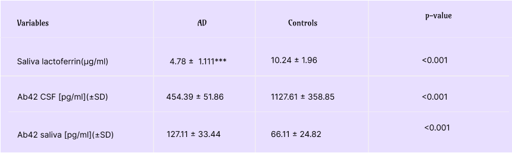

Overview
As longevity increases worldwide, Alzheimer’s Disease (AD) is becoming more
prevalent and poses a growing burden on our healthcare systems, both socially and economically. Current
treatments for AD are mostly ineffectual palliative care. Management of AD is focused on caregiving and
inclusion, the cost of which is over a trillion USD annually [1]. Particularly in India, where deaths
due to AD have increased five-folds in the last 30 years, little to no reliable infrastructure exists
for geriatric care and the anticipated costs are extremely high. Several studies have identified risk
factors of AD, like levels of education and cardiovascular diseases, that clearly explain the high
incidence and burden of AD in several Indian states.
Characterized by an extremely long pre-clinical stage where neuropathological
changes already begin to occur, studies have approximated nearly 416 million persons on the AD continuum
[2]. Usually, following a clinical diagnosis, the more definitive tests for AD include expensive medical
imaging (CT, MRI, etc.) or the invasive quantification of certain biomarker levels in cerebrospinal
fluid. Therefore, there is an urgent need for a more accessible AD diagnostic tool for vulnerable age
groups, enabling regular testing. This would help both delay the onset of dementia and foster research
and development of effective therapeutic tools right during the early stages.
The anticipated burden on our healthcare has fostered some urgent
and important research in the last few years, revealing the presence of salivary biomarkers for AD.
This could potentially rewrite the scope of early diagnosis and management of AD. Lately, biomarkers
for several diseases that are otherwise difficult to diagnose are being discovered in easily
accessible body fluids like saliva, sweat and tears. Research has made significant progress in
verifying, quantifying, and physiologically explaining the presence of certain biomarkers of AD in
saliva. The most promising of these are Amyloid Beta and Lactoferrin, with clear specificity for AD
and p-values 0.001 [3, 4]..

The project we’re developing this year is an aptamer-based diagnostic kit that
allows rapid and convenient quantification of these biomarkers in saliva, facilitating early detection
and intervention. We will be synthesizing and optimizing aptamers discovered through SELEX[5] by using
in-silico methods and tools. The aim is to increase binding affinity of these aptamers and suit them
more to our specific needs such as effectively identifying the type of heterogeneous pool of Amyloid
Beta oligomers found in saliva.
Apta-sensor designs fundamentally work on the principle of detecting
conformational changes in the immobilized aptamer and converting it to a quantifiable signal.
Alzheimer’s Disease
Currently, more than 55 million people have dementia worldwide, over 60% of whom
live in low- and middle- income countries [1]. Deaths due to dementia, after adjusting for old age, are
estimated to be 1.5 million in 2019 alone [6]. These numbers are set to surge in the coming years with
increasing longevity and aging populations. Alzheimer’s Disease is the leading cause of progressive
dementia. India, particularly vulnerable to a lot of AD risk factors and life-style predispositions,
urgently needs to direct more attention and resources towards the disease. These risk factors, including
education levels, genetic diversity, rural majorities, cardiovascular diseases, and nutrient
deficiencies vary disproportionately across the states and strongly correlate with estimated AD patients
[7].
The effects of AD are deeply wound into our very social fabric. Neurodegenerative
disorders have profound effects on the lives of patients as well as their loved ones. Having AD can be a
deeply alienating experience as it drastically alters social dependencies, understandings, and how we
relate to each other. For as long as no cure exists, management will rely on improving geriatric care
and inclusion, posing growing social and economic challenges to our healthcare systems. Early diagnosis
is crucial for effective management and intervention, and also enables the development of therapeutic
tools for these preclinical stages.

In India, cultural differences and lack of awareness have been identified as major
challenges to tackle for the timely management of AD. One of the primary reasons for delayed diagnosis
and inadequate care for AD is the common tendency to attribute certain symptoms to old age instead of
dementia. Existing cognitive tests have been designed for English-speaking populations and don’t account
for socio-cultural differences. The possibility of disintegrating joint-family systems decreasing
cognitive engagement of the elderly and thus increasing the incidence of dementia is also being studied.
One of the biggest costs of managing AD is that of informal care, i.e. family
members staying home to support and take care of dependent elderly, and the consequent loss of family
income. This is particularly high in India due to the lack of trained professionals in managing patients
with AD and also in general geriatric care. This tends to disproportionately and unfairly affect the
women in the families who are expected and forced to stay back at home. Thus, there’s an urgent need for
the development of an easily accessible diagnostic tool, to screen elderly populations regularly for
timely intervention and better planning of how to care for the patient.

Basic Working of the Kit
Biomarkers
Lactoferrin is a globular glycoprotein that’s an important component of the innate
immune system. It’s been detected in various secretory fluids like milk, saliva, tears, and nasal
secretions. Decreased salivary levels of Lactoferrin (∼ 4.78 ±1.11 µg/mL) have been reported in patients
with Alzheimer’s Disease. Further, studies have identified a strong correlation (>77%) between decreased
salivary lactoferrin levels in seemingly healthy patients and their risk of developing Alzheimer’s or
mild Cognitive Impairment [8].
Amyloid Beta (Aβ) refers to a group of peptides that are found in extracellular gray
matter deposits in the brains of patients with Alzheimer’s Disease. Aβ42 in cerebrospinal fluid is used
in practice as a biomarker and collected through a lumbar puncture. However, as the procedure is
invasive, recent research has focused on quantifying Aβ42 levels in more easily accessible body fluids
like saliva. Multiple studies have identified increased salivary levels of Aβ (∼ 127.11 ±33.44 pg/mL) as
biomarkers for AD with high specificity and sensitivity (AUC in ROC analysis= 0.806) [9].

Aptamers
Aptamers are short oligonucleotide or peptide sequences with high binding affinity
for particular target molecules. Aptamers are rapidly replacing antibodies and most other target
recognition systems in biosensors owing to their stability, versatility, sensitivity and inexpensive
synthesis methods. There has been significant advancement in the development of aptamers against
Lactoferrin and Amyloid Beta[5]. Most of these are developed through the standard method of in vitro
selection called Systematic Evolution of Ligands by Exponential Enrichment (SELEX). We intend to improve
the binding affinity of these and particularly target some of our needs, like targeting the type of
heterogeneous pool of Amyloid Beta oligomers found in saliva. The methods and in-silico tools we’ll be
using for this are detailed in the next section.
 1 (2).png)
Aptasensors
The binding between an aptamer and a target molecule leads to a change in
conformation of the aptamer structure which can be quantified through various colorimetric, fluorescence
or electrochemical based techniques[10]. Aptasensors have become a reliable method for diagnosis of
disease biomarkers as well as environmental pollutants and contaminants. The use of aptamers in Point of
Care diagnostic kits particularly increased during the pandemic for the detection of SARS-CoV-2[11].
After going through various different aptamer designs, we have chosen an
electrochemical based signal for our aptasensor. Electrochemical aptasensors, when combined with signal
amplification techniques[12] can provide an easier way of quantifying the results. These can be
integrated into a small POC device which measures the electrochemical signal in case of biomarker
detection and performs signal amplification to provide user interpretable results. A switch-on-off
electrochemical system can be developed by attaching an electron donating molecule such as ferrocene to
one end of the aptamer which can then be immobilized on the respective electrode. During the absence of
the target molecule, the aptamer exists binded to its complementary DNA strand preventing the electron
donor from coming in contact with the electrode. Thus, no electronic signal is observed and the device
can be said to be in an off state. Upon exposure to the target molecule, the aptamer instead binds to
the target molecule, leaving the complementary DNA strand, causing a change in conformation of the
aptamer-biomarker complex. This allows for the electron donor to come in vicinity of the electrode
leading to a measurable electronic signal which can be amplified for further inference. This is known as
a Target Responsive Electrochemical Aptamer Switch. [13]

Aptamers Design
Over the last decade, aptamers have been used in various point-of-care diagnostic
platforms including Aptamer-Linked Immobilized Sorbent Assay (ALISA), Dot-blot, electrochemiluminescence
(ECL) assays, fluorescence-based assays, nanoparticle-based assays, lateral flow test strips. Moreover,
various aptamer-based diagnostic assays have exhibited the potential to follow the WHO's “ASSURED”
criteria for point-of-care diagnostics: affordable, sensitive, specific, user-friendly, robust, and can
always be performed outside a laboratory or hospital by unskilled labor.[14]
Regardless of the intended application, high target affinity is a critical
requirement of aptamers. However, aptamers with high affinities are not always isolated by conventional
SELEX. Numerous reports show various techniques for improving affinities of aptamers including the
optimization of various conditions such as buffer, ions, pH, temperature, and we would like to introduce
other works for improvement of aptamers apart from these optimization of the environmental conditions.
Limitation of Binding Affinity in the aptamers identified by SELEX reflect two major procedural flaws in
SELEX- One is the limitation of molecular diversities in the initial library and the other is the loss
of potential high affinity aptamers during polymerase chain reaction (PCR).The affinities of aptamers
can be improved through sequence optimizations, and the understanding of sequence–activity relationships
of existing aptamers can be used to improve the properties of other aptamers.[15]
Aptamers fold into unique structures that usually include stems and loops. These
structures are central to target molecule recognition and any disruptions result in poor binding
abilities. Some streptavidin binding DNA aptamers that were generated from different libraries by
different laboratories have the same bulge-hairpin secondary structure motif. Moreover, several
nucleotides in the loop and bulge, which were critical for binding, were present in all high affinity
sequences.
We were able to find the aptamer sequences in the existing literature for our
selected biomarkers for Alzheimer Disease - Beta Amyloid and Lactoferrin. We established a protocol of
optimizing the aptamer sequences obtained through in-silico methods which involves utilizing an
algorithm called MPDR(Mutate Predict Dock Repeat).
Contribution
1. The binding site of the aptamer on the target biomarker. This step helps to
identify
the specific region or resStructure Analysis: Analyze the secondary structure and overall folding of the
existing aptamer sequence using computational tools like Mfold or RNAfold. This step helps understand
the structural characteristics and potential binding sites.
2. Binding Site Identification: Use molecular docking or molecular dynamics
simulations
to identify idues involved in binding.
3. Virtual Screening: Perform virtual screening using docking or molecular dynamics
simulations to identify potential modifications or mutations that can improve binding affinity or
specificity. Evaluate the interactions between the aptamer and the target, and analyze the binding
energy and key interactions.
4. Sequence Optimization: Apply computational algorithms like genetic algorithms,
simulated annealing, or particle swarm optimization to optimize the aptamer sequence. Explore sequence
space by modifying specific nucleotides or regions, introducing mutations, or applying predefined
motifs. The goal is to improve the binding affinity, specificity, or other desired properties.
5. Evaluation: Assess the optimized aptamer sequences using computational methods.
Calculate the predicted binding affinity, evaluate the stability of the aptamer-target complex, and
analyze the key interactions. Compare the results with the original aptamer to determine the improvement
achieved through the optimization process
6. Iterative Optimisation - If the experimental results are not satisfactory, we can
iterate the steps 1-5 many times to get a highly optimized aptamer sequence.[16,17,18]
We can utilize a wide of range of softwares according to our requirements for each
step of the following algorithm -
1. Structure Analysis - Mfold, RNAfold, Avogadro.
2. Docking Analysis - ZDOCK 2.0, AUTODOCK, HEX
3. Molecular Dynamics Analysis - GROMACS, AMBER, CHARMM, NAMD
Novelty

1. Saliva Sample - Collection of samples from easily accessible body fluids such as saliva greatly
expand
the scope of diagnostic tools for rapid detection and quantification of biomarkers. This simplifies
invasive testing procedures, reduces costs, and encourages people to get tested more.
2. Early Detection- Salivary levels of our chosen biomarkers, Lactoferrin and
Amyloid
Beta, are reported to vary well before the onset of clinically observable dementia. This gives patients
and their families enough time for intervention and planning management.
3. Point-Of-Care- This extremely simplified and cost-effective procedure using a
saliva
sample and electrochemical sensor enclosed in a small device can be easily operated by any person. The
accessibility, along with the advantage of rapidly obtainable results makes our kit an extremely useful
alternative to existing diagnostic tools.
References
1. WHO Dementia Fact-Sheet, 2023.
https://www.who.int/news-room/fact-sheets/detail/dementia
2. Gustavsson, A, Norton, N, Fast, T, et al. Global estimates on the number of
persons across the Alzheimer's disease continuum. Alzheimer's Dement. 2023; 19: 658– 670.
https://doi.org/10.1002/alz.12694
3. Boschi, S.; Roveta, F.; Grassini, A.; Marcinnò, A.; Cermelli, A.; Ferrandes, F.;
Rainero, I.; Rubino, E. Aβ42 as a Biomarker of Alzheimer’s Disease: Is Saliva a Viable Alternative to
Cerebrospinal Fluid? Brain Sci. 2022, 12, 1729. https://doi.org/10.3390/
brainsci12121729
brainsci12121729
4. Marta González-Sánchez, Fernando Bartolome, Desiree Antequera, Veronica
Puertas-Martín, Pilar González, Adolfo Gómez-Grande, Sara Llamas-Velasco, Alejandro Herrero-San Martín,
David Pérez-Martínez, Alberto Villarejo-Galende, Mercedes Atienza, Miriam Palomar-Bonet, Jose Luis
Cantero, George Perry, Gorka Orive, Borja Ibañez, Hector Bueno, Valentin Fuster, Eva Carro, Decreased
salivary lactoferrin levels are specific to Alzheimer's disease, EBioMedicine, Volume 57, 2020, 102834,
ISSN 2352-3964, https://doi.org/10.1016/
j.ebiom.2020.102834
j.ebiom.2020.102834
5. Zheng Y, Zhang L, Zhao J, Li L, Wang M, Gao P, Wang Q, Zhang X, Wang W. Advances
in aptamers against Aβ and applications in Aβ detection and regulation for Alzheimer's disease.
Theranostics. 2022 Jan 31;12(5):2095-2114. doi: 10.7150/thno.69465. PMID: 35265201; PMCID: PMC8899576.
6. Nichols, E. and Vos, T. (2020), Estimating the global mortality from Alzheimer’s
disease and other dementias: A new method and results from the Global Burden of Disease study 2019.
Alzheimer's Dement., 16: e042236. https://doi.org/10.1002/alz.042236
7. Ravindranath, V., Sundarakumar, J.S. Changing demography and the challenge of
dementia in India. Nat Rev Neurol 17, 747–758 (2021). https://doi.org/10.1038/s41582-021-00565-x
8. Carro, E., Bartolomé, F., Bermejo-Pareja, F., Villarejo-Galende, A., Molina,
J.A., Ortiz, P., Calero, M., Rabano, A., Cantero, J.L. and Orive, G. (2017), Early diagnosis of mild
cognitive impairment and Alzheimer's disease based on salivary lactoferrin. Alzheimer's & Dementia:
Diagnosis, Assessment & Disease Monitoring, 8: 131-138. https://doi.org/10.1016/
j.dadm.2017.04.002
j.dadm.2017.04.002
9. Boschi, S.; Roveta, F.; Grassini, A.; Marcinnò, A.; Cermelli, A.; Ferrandes, F.;
Rainero, I.; Rubino, E. Aβ42 as a Biomarker of Alzheimer’s Disease: Is Saliva a Viable Alternative to
Cerebrospinal Fluid? Brain Sci. 2022, 12, 1729. https://doi.org/10.3390
/brainsci12121729
/brainsci12121729
10. Ning Y, Hu J, Lu F. Aptamers used for biosensors and targeted therapy. Biomed
Pharmacother. 2020 Dec;132:110902. doi: 10.1016/j.biopha.2020.110902. Epub 2020 Oct 20. PMID: 33096353;
PMCID: PMC7574901.
11. Koteswara Rao V (2021) Point of Care Diagnostic Devices for Rapid Detection of
Novel Coronavirus (SARS-nCoV19) Pandemic: A Review. Front. Nanotechnol. 2:593619. doi:
10.3389/fnano.2020.593619
12. Philippe Dauphin-Ducharme, Kyungae Yang, Netzahualcóyotl Arroyo-Currás, Kyle L.
Ploense, Yameng Zhang, Julian Gerson, Martin Kurnik, Tod E. Kippin, Milan N. Stojanovic, and Kevin W.
Plaxco : Electrochemical Aptamer-Based Sensors for Improved Therapeutic Drug Monitoring and
High-Precision, Feedback-Controlled Drug Delivery ACS Sensors 2019 4 (10), 2832-2837 DOI:
10.1021/acssensors.9b01616
13. Xiaolei Zuo, Shiping Song, Jiong Zhang, Dun Pan, Lihua Wang, and Chunhai Fan : A
Target-Responsive Electrochemical Aptamer Switch (TREAS) for Reagentless Detection of Nanomolar ATP
Journal of the American Chemical Society 2007 129 (5), 1042-1043 DOI: 10.1021/ja067024b
14. Sharma, T. K. (2018, July 1). Aptamers in the Therapeutics and Diagnostics
Pipelines. NCBI. https://www.ncbi.nlm.nih.gov/
pmc/articles/PMC6096388/
pmc/articles/PMC6096388/
15. Hasegawa, H., & Abe, K. (n.d.). Molecules | Free Full-Text | Methods for
Improving Aptamer Binding Affinity.
https://www.mdpi.com/1420-3049/21/4/421
16. Integrating In Silico Prediction Methods, Molecular Docking, and Molecular
Dynamics Simulation to Predict the Impact of ALK Missense Mutations in Structural Perspective. (n.d.).
NCBI.
https://www.ncbi.nlm.nih.gov/
pmc/articles/PMC4098886/
pmc/articles/PMC4098886/
17. De novo post-SELEX optimization of a G-quadruplex DNA aptamer binding to marine
toxin gonyautoxin 1/4. (2020, November 10). NCBI.
https://www.ncbi.nlm.nih.gov/
pmc/articles/PMC7689369/
pmc/articles/PMC7689369/
18. Analysis of aptamer-target binding and molecular mechanisms by thermo
fluorimetric analysis and molecular dynamics simulation. (2023, May 9). Frontiers.
https://www.frontiersin.org/articles/
10.3389/fchem.2023.1144347/full
https://www.frontiersin.org/articles/
10.3389/fchem.2023.1144347/full